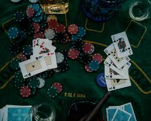

Poker is a family of card games, centered on betting, hand rankings, and a mix of skill, strategy, and chance. Players are dealt cards from a standard deck and place bets into a common pot based on how strong they believe their hand is (or how well they can bluff). Variants like Texas Hold’em and Omaha are globally popular, with organized tournaments and cash games that reward both strategic play and psychological reading of opponents.